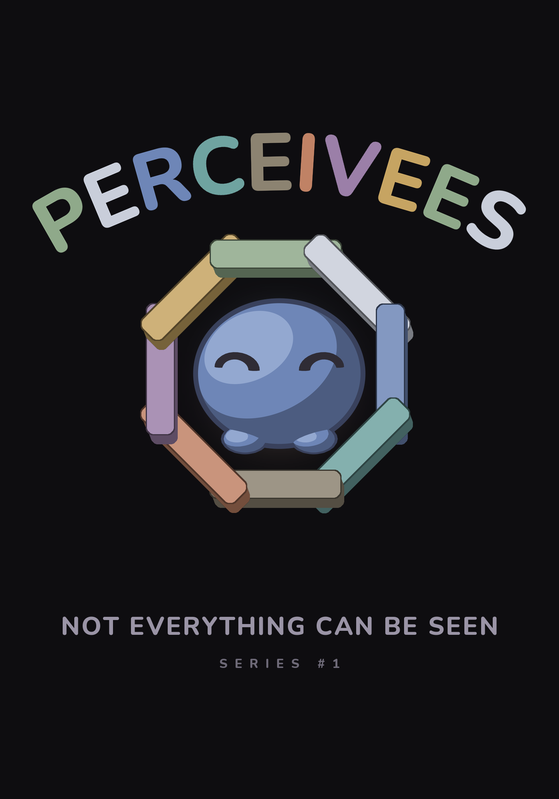
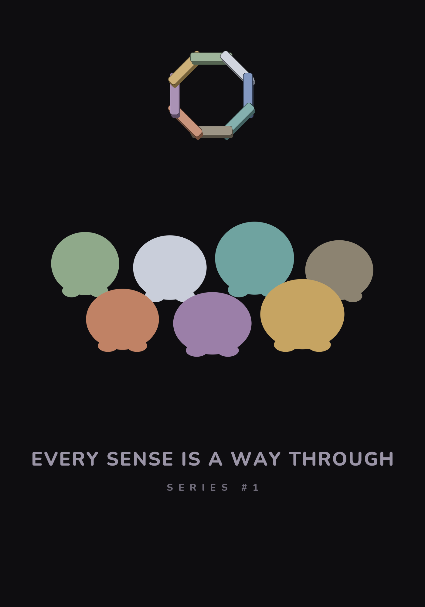
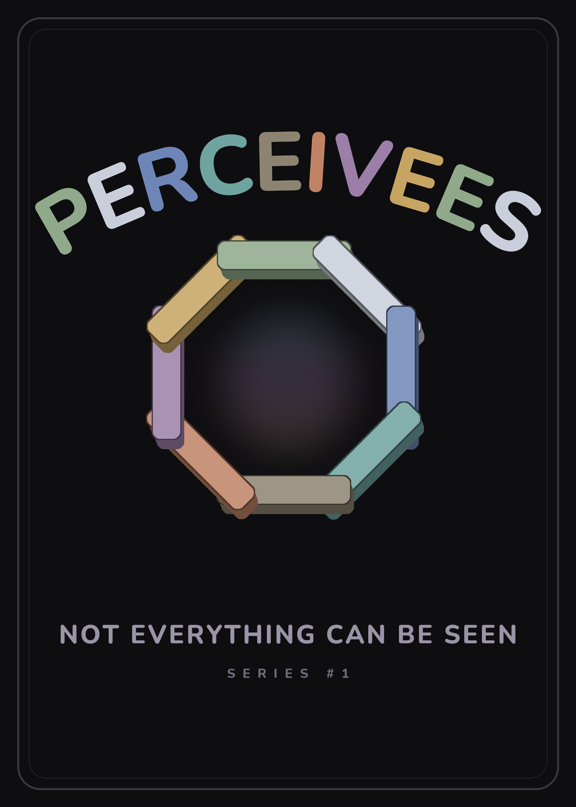
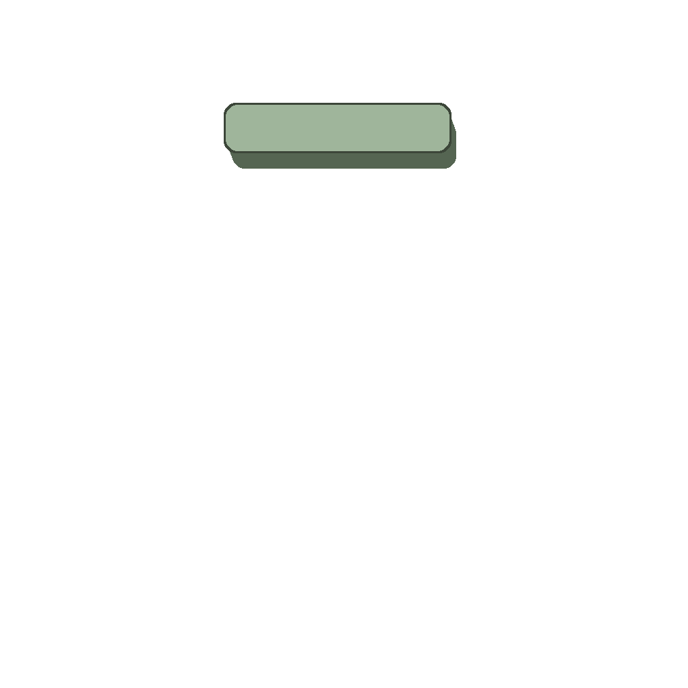
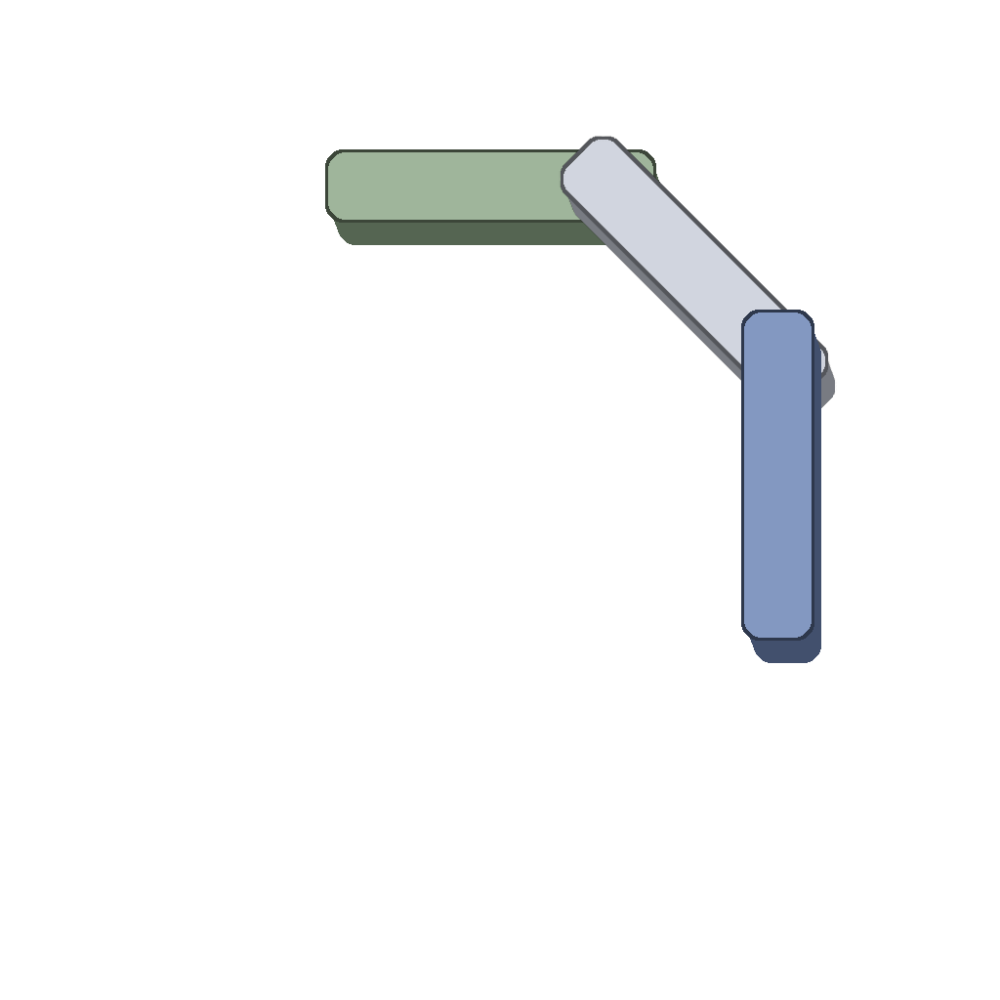
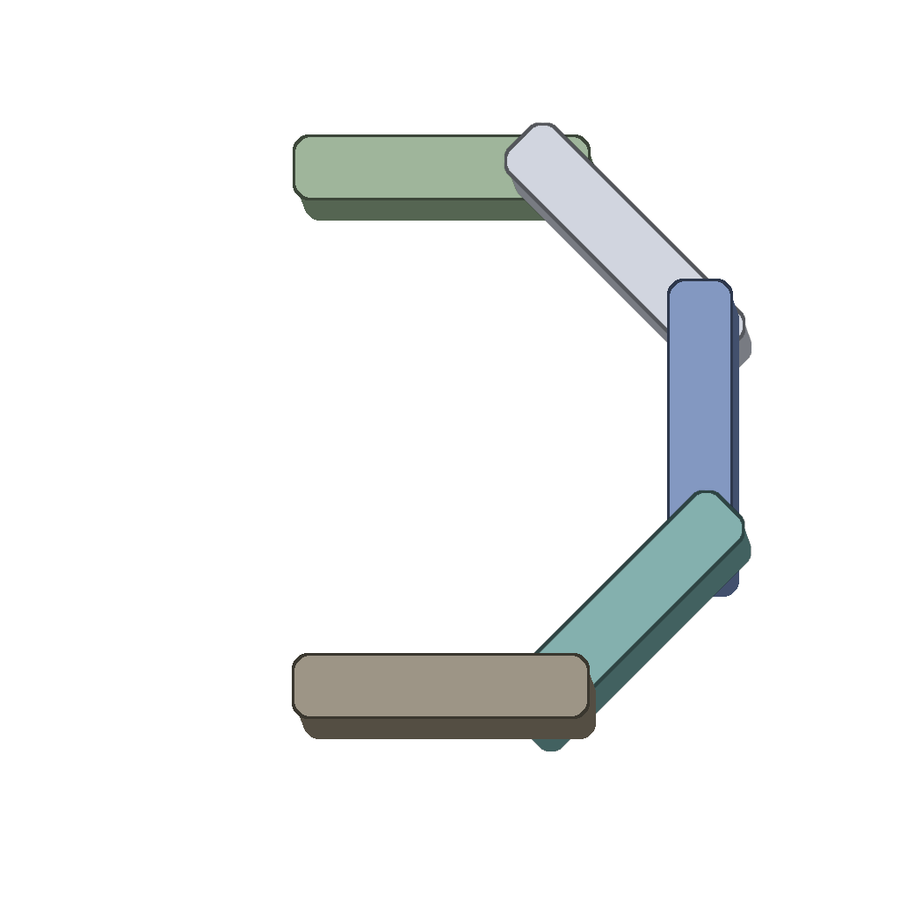
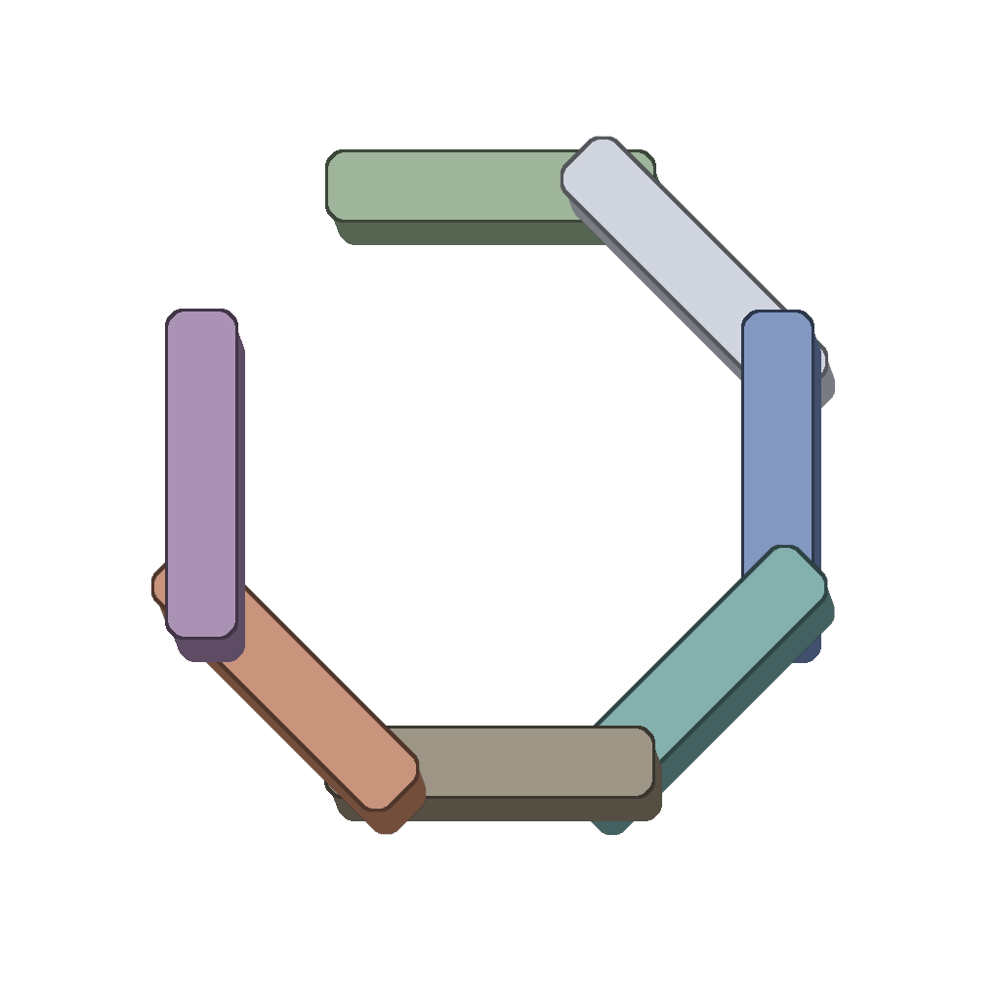
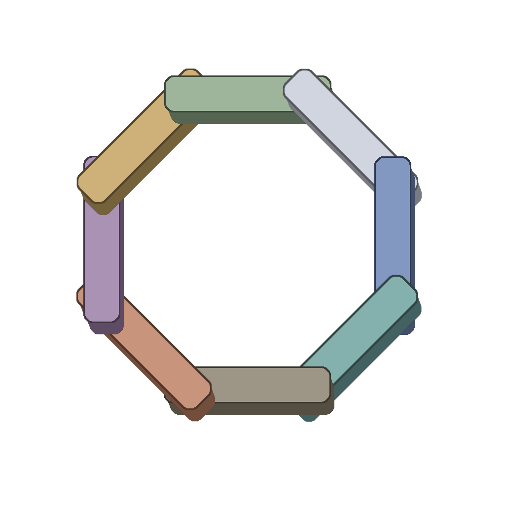
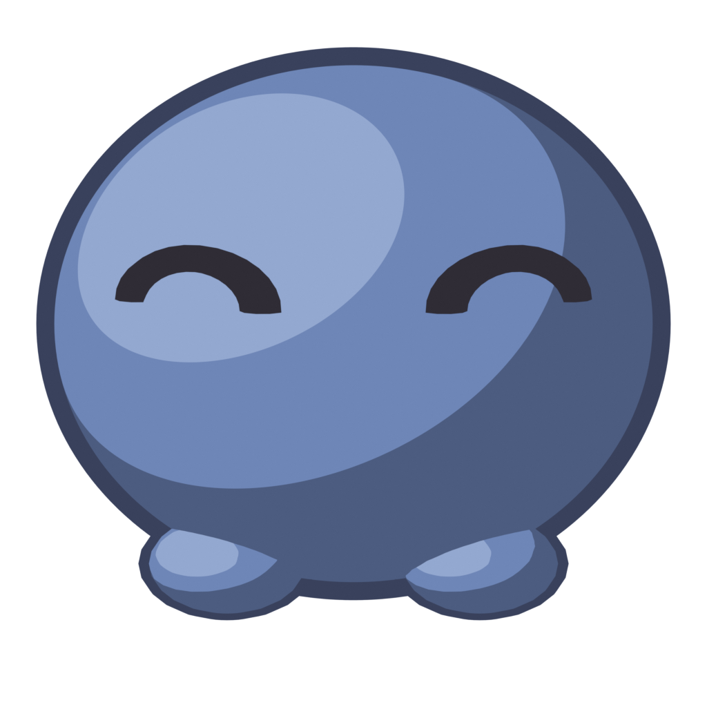
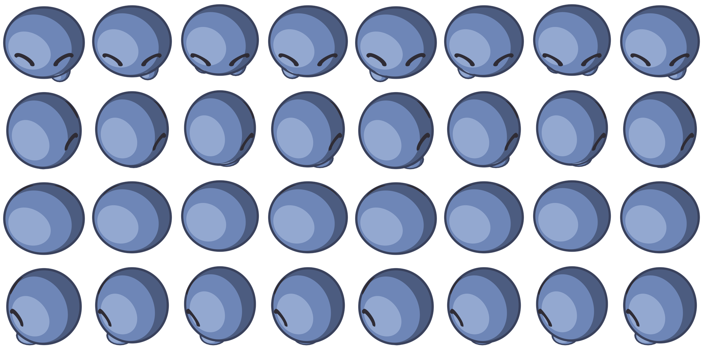

PERCEIVEES
Not everything can be seen
Series #1 · Concept
Rip a pack →The mark is an impossible object
Eight beams, one per sense, forming a ring that cannot exist in three dimensions.
An impossible object works by exploiting how your visual system builds depth out of ambiguous cues. It is, literally, a perception puzzle — so the mark argues the whole idea through its own form, rather than by drawing an organ that perceives. Every beam is lit from the same direction, which is what convinces the eye they are solid; then each one passes both in front of and behind the loop, which is what makes the ring impossible. The paradox lives in the drawing order, not the geometry.
The eight senses
Not five. Sight, sound, scent, taste and touch — plus balance, body, and the inner sense of what is happening inside you. Three of the eight cannot be seen at all.
The pack
The black space inside the mark becomes a window. On the wrapper a creature sits inside it; on the card back it stays empty — deliberately, and permanently.



Awakening
A creature climbs five classes. The badge on its card is the mark itself, building one beam at a time.

Hatchling1 BEAM
Wandering3 BEAMS
Awakened5 BEAMS
Luminary7 BEAMS
MythicCLOSEDOnly a closed ring can be impossible. A partial ring is just a chain of beams — so the paradox appears at the exact moment a creature perceives all eight senses. The badge is the brand, and the brand is the reward.
In the world
The creatures are built in 3D and rendered live in a top-down world.


Open a pack
Ten cards, each one rolled — foil striations build as a creature climbs its classes.
Rip a pack →